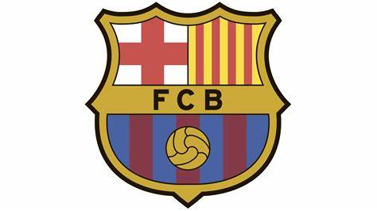

Francesco Totti tak pernah menyesal menghabiskan karier sepakbola di AS Roma. Dia pun bertanya-tanya apakah Lionel Messi bisa meraih Ballon d'Or jika bermain untuk Giallorossi. Messi sudah mengoleksi delapan trofi Ballon d'Or selama menjadi pemain. Sebagian besar didapat saat berkostum Barcelona. Aksi Messi di lapangan memang sulit ditandingi oleh pesepakbola lainnya. Bahkan, sampai saat ini tampaknya belum ada yang menyamai jeniusnya Messi dalam bermain. Baca artikel sepakbola, "Totti Bertanya-tanya, Messi Bisa Menang Ballon d'Or Kalau di Roma.